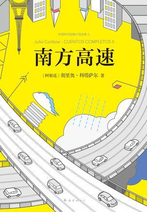

书名
出版社
作者
原作名
译者
页数
定价
封面
关键字
操作
高速公路
南海出版贵司
[阿根廷] 胡利奥・科塔萨尔
Cuentos completos
金灿/林叶青/陶玉平
441
68.00

拉美文学 小说 成长
查看信息
添加
修改
删除
废土
新星出版社
[美] 约翰・约瑟夫・亚当斯
Wastelands
汪梅子/刘媛/耿辉/李懿/秦鹏
492
52.00
科幻 末世 美国
查看信息
添加
修改
删除